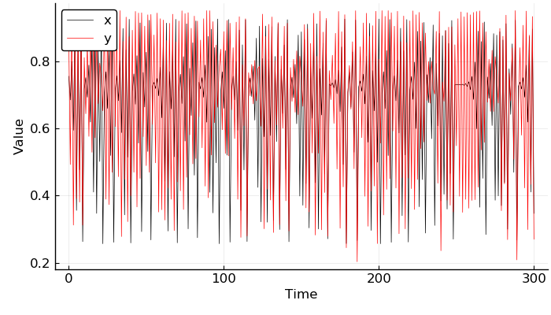
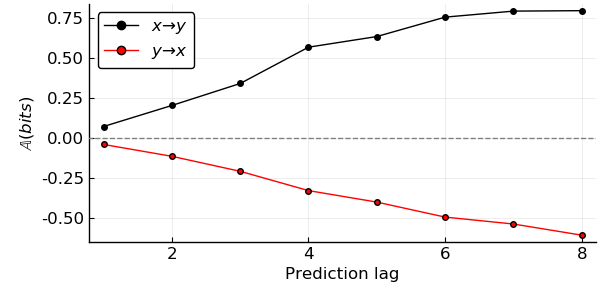
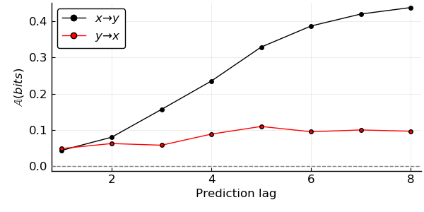

CausalityTools.jl provides a collection of algorithms for the detection of underlying causal structure from time series data, and for the approximation of the transfer operator and invariant measures. It is part of the JuliaDynamics organization.
The package is equally well-suited both for the study of causal directionality from empirical data and for studying theoretical systems. Key features include:
Integration with UncertainData.jl, which makes handling uncertainties in your causality analyses a breeze.
Integration with DynamicalSystems.jl, which allows the causality statistics to be applied to dynamical systems.
Library of coupled dynamical systems for testing algorithm performance.
For more information, see the package documentation.
A brief tutorial
Here’s an example of how to use some of the functionality in the CausalityTools.jl package. The jupyter notebook was run with a Julia 1.2 kernel (Note: Pending a 1.0 release, there may be breaking changes).
using CausalityTools
using DynamicalSystemsBase
using Distributions
using Measures
using LaTeXStrings
using Plots; pyplot()
Plots.PyPlotBackend()
Defining a dynamical system and generating time series
Let’s define a system composed of two unidirectionally coupled logistic maps:
function eom_logistic2(dx, x, p, n)
c_xy, r₁, r₂, σ = (p...,)
ξ = rand()
x, y = x[1], x[2]
f_xy = (y + (c_xy*(x + σ*ξ)/2) ) / (1 + (c_xy/2)*(1+σ))
dx[1] = r₁ * x * (1 - x)
dx[2] = r₂ * (f_xy) * (1 - f_xy)
return
end
eom_logistic2 (generic function with 1 method)
Create a function that returns an instance of a DynamicalSystems.DiscreteDynamicalSystem.
function logistic2(u₀, c_xy, r₁, r₂, σ)
p = [c_xy, r₁, r₂, σ]
DiscreteDynamicalSystem(eom_logistic2_unidir, u₀, p)
end
logistic2(;u₀ = rand(2), c_xy = 0.1, r₁ = 3.78, r₂ = 3.66, σ = 0.05) =
logistic2(u₀, c_xy, r₁, r₂, σ)
logistic2 (generic function with 2 methods)
Initialise a system
system = logistic2(c_xy = 0.5, r₁ = 3.7, r₂ = 3.8)
2-dimensional discrete dynamical system state: [0.422895, 0.736883] e.o.m.: eom_logistic2_unidir in-place? true jacobian: ForwardDiff parameters: [0.5, 3.7, 3.8, 0.05]
Generate orbit (time series).
npts = 300
orbit = trajectory(system, 300, Ttr = 1000)
x, y = columns(orbit);
Plot it
plot(size = (700, 400), bottom_margin = 5mm, left_margin = 5mm,
tickfont = font(12), guidefont = font(12), legendfont = font(12),
xlabel = "Time", ylabel = "Value", legend = :topleft)
plot!(0:npts, x, c = :black, label = "x", lw = .5)
plot!(0:npts, y, c = :red, label = "y", lw = .5)

Okay, so we have some time series
PredictiveAsymmetryTest
In this example, we will use a new test for causality from time series. Let’s first investigate the documentation for the test:
?PredictiveAsymmetryTest
search: PredictiveAsymmetryTest predictive_asymmetry
PredictiveAsymmetryTest(predictive_test::CausalityTest)
The parameters for a predictive asymmetry causality test [1].
Mandatory keywords
predictive_test: An instance of a predictive causality test that explicitly uses prediction lags (e.g.VisitationFrequencyTestorTransferOperatorGridTest.
About the prediction lags
The prediction lags in the predictive causality test must consist of n negative integers and n positive integers that are symmetric around zero.
In other words, negative lags must exactly match the positive lags but with opposite sign. The zero lag can be included, but will be ignored, so it is possible to give ranges too.
Examples
test_visitfreq = VisitationFrequencyTest(ηs = [-5, -4, -2, -1, 0, 1, 2, 4, 5])
test_transferoperator = TransferOperatorGridTest(ηs = -3:3)
# Note that `predictive_test` is a *mandatory* keyword.
PredictiveAsymmetryTest(predictive_test = test_visitfreq)
PredictiveAsymmetryTest(predictive_test = test_transferoperator)
A Transfer entropy test
Okay, so we first need to define a transfer entropy test to use for the prediction. For this, we have several choices, but for the demonstration, we’ll stick to the TransferOperatorGridTest, which estimates probabilities from an approximation to the transfer operator Diego et al., 2019.
?TransferOperatorGridTest
search:TransferOperatorGridTest TransferOperatorGrid
TransferOperatorGridTest(k::Int = 1, l::Int = 1, m::Int = 1, n::Int = 1,
τ::Int = 1, b = 2, estimator::TransferOperatorGrid = TransferOperatorGrid(),
binning_summary_statistic::Function = StatsBase.mean,
binning::RectangularBinning, ηs)
The parameters for a transfer entropy test using the TransferOperatorGrid estimator.
Mandatory keyword arguments
binning::RectangularBinning: An instance of aRectangularBinningthat dictates how the delay embedding is discretized.ηs: The prediction lags (that gos into the $T_{f}$ component of the embedding).
Optional keyword arguments
k::Int: The dimension of the $T_{f}$ component of the embedding.l::Int: The dimension of the $T_{pp}$ component of the embedding.m::Int: The dimension of the $S_{pp}$ component of the embedding.n::Int: The dimension of the $C_{pp}$ component of the embedding.τ::Int: The embedding lag. Default isτ = 1.b: Base of the logarithm. The default (b = 2) gives the TE in bits.estimator::TransferOperatorGrid: ATransferOperatorGridestimator instance.binning_summary_statistic::Function: A summary statistic to summarise the transfer entropy values if multiple binnings are provided.
Estimation of the invariant measure
With a TransferOperatorGridTest, the first step is to compute an approximation to the transfer operator over the partition elements of a rectangular discretization of an appropriate delay reconstruction of the time series to be analysed. Transfer entropy is then computed from the invariant distribution arising from the transfer operator.
About the delay reconstruction for transfer entropy analysis
Denote the time series for the source process $S$ as $S(t)$, and the time series for the target process $T$ as $T(t)$, and $C_i(t)$ as the time series for any conditional processes $C_i$ that also may influence $T$. To compute (conditional) TE, we need a generalised embedding incorporating all of these processes.
For convenience, define the state vectors
$$ \begin{align} T_f^{(k)} &= {(T(t+\eta_k), \ldots, T(t+\eta_2), T(t+\eta_1))}, \newline T_{pp}^{(l)} &= { (T(t), T(t-\tau_1), T(t-\tau_2), \ldots, T(t - \tau_{l - 1}))}, \newline S_{pp}^{(m)} &= {(S(t), S(t-\tau_1), S(t-\tau_2), \ldots, S(t-\tau_{m - 1}))},\newline C_{pp}^{(n)} &= { (C_1(t), C_1(t-\tau_1), \ldots, C_2(t), C_2(t-\tau_1) }, \end{align} $$
where the state vectors $T_f^{(k)}$ contain $k$ future values of the target variable, $T_{pp}^{(l)}$ contain $l$ present and past values of the target variable, $S_{pp}^{(m)}$ contain $m$ present and past values of the source variable, $C_{pp}^{(n)}$ contain a total of $n$ present and past values of any conditional variable(s). Combining all variables, we have the generalised embedding
$$ \begin{align} \mathbb{E} = (T_f^{(k)}, T_{pp}^{(l)}, S_{pp}^{(m)}, C_{pp}^{(n)}) \end{align} $$
with a total embedding dimension of $k + l + m + n$. Here, $\tau$ indicates the embedding lag (in the VisitationFrequencyTest, we set $\tau_1 = \tau_2 = \tau_3 = \ldots$), and $\eta$ indicates the prediction lag (the lag of the influence the source has on the target).
Hence, in the generalised embedding, only $T_f$ depends on the prediction lag $\eta$, which is to be determined by the analyst. For transfer entropy analysis, $\eta$ is chosen to be some positive integer, while for predictive asymmetry analysis, symmetric negative and positive $\eta$s are used for computing $\mathbb{A}$.
In terms of this generalised embedding, transfer entropy from a source variable $S$ to a target variable $T$ with conditioning on variable(s) $C$ is thus defined as
$$ \begin{align} TE_{S \rightarrow T|C} = \int_{\mathbb{E}} P(T_f, T_{pp}, S_{pp}, C_{pp}) \log_{2}{\left( \frac{P(T_f | T_{pp}, S_{pp}, C_{pp})}{P(T_f | T_{pp}, C_{pp})}\right)} \end{align} $$
Without conditioning, we have
$$ \begin{align} TE_{S \rightarrow T} = \int_{\mathbb{E}} P(T_f, T_{pp}, S_{pp}) \log_{2}{\left(\frac{P(T_f | T_{pp}, S_{pp})}{P(T_f | T_{pp})}\right)} \end{align} $$
Low-level estimator
This test uses the TransferOperatorGrid estimator on the following low-level method under the hood.
transferentropy(::Any, ::TEVars, ::RectangularBinning, ::TransferEntropyEstimator)
In this estimator, the mapping between variables of the generalised embedding and the marginals during transfer entropy computation is controlled using a TEVars instance. It is highly recommended that you check the documentation for this method, because it describes the transfer entropy estimation procedure in detail.
Notes:
- Use
causality(source, target, params::TransferOperatorGridTest)for regular transfer entropy analysis. This method uses only thek,l,mand ignoresnwhen constructing the delay reconstruction. - Use
causality(source, target, cond, params::TransferOperatorGridTest)for conditional transfer entropy analysis. This method uses thek,l,mandnwhen constructing the delay reconstruction.
Example
# Prediction lags
ηs = 1:10
binning = RectangularBinning(10)
# Use defaults, binning and prediction lags are required.
# Note that `binning` and `ηs` are *mandatory* keyword arguments.
TransferOperatorGridTest(binning = binning, ηs = ηs)
# The other keywords can also be adjusted
TransferOperatorGridTest(k = 1, l = 2, binning = binning, ηs = ηs)
Now we have the information we need, and can get back to our example:
Define test
# Maximum prediction
η_max = 8
# Embedding parameters (3-dimensional embedding)
k, l, m = 1, 1, 1
# Partition
n_subdivisions = floor(Int, npts^(1/(k + l + m + 1)))
bin_scheme = RectangularBinning(n_subdivisions)
#Transfer entropy test with base-2 logarithm,
te_test = TransferOperatorGridTest(binning = bin_scheme,
ηs = -η_max:η_max, b = 2, k = k, l = l, m = m)
# Predictive asymmetry test based on the transfer entropy test
test = PredictiveAsymmetryTest(predictive_test = te_test)
PredictiveAsymmetryTest{TransferOperatorGridTest}(predictive_test = TransferOperatorGridTest(k = 1, l = 1, m = 1, n = 1, τ = 1, b = 2, estimator = TransferOperatorGrid(), binning_summary_statistic = mean, binning = RectangularBinning(4), ηs = -8:8))
Apply test to time series
influence_xtoy = causality(x, y, test)
8-element Array{Float64,1}:
0.07353044320389923
0.2048533816659921
0.3420588893868155
0.5687136636138481
0.6351432545620197
0.7562916061278022
0.7939027156800291
0.7966558227653682
influence_ytox = causality(y, x, test)
8-element Array{Float64,1}:
-0.03844661921591097
-0.11252642048669959
-0.20612641064467407
-0.32656831712281686
-0.3982976779871139
-0.4919700965986813
-0.535133253437186
-0.6047774983739265
Plot the predictive asymmetries against the prediction lags.
plot(size = (600, 300), bottom_margin = 5mm, left_margin = 5mm,
tickfont = font(12), guidefont = font(12), legendfont = font(12),
xlabel = "Prediction lag", ylabel = L"\mathbb{A} (bits)",
legend = :topleft)
plot!(1:η_max, influence_xtoy, m = :circle, c = :black, label = L"x \to y")
plot!(1:η_max, influence_ytox, m = :circle, c = :red, label = L"y \to x")
hline!([0], ls = :dash, lc = :grey, label = "")

We find that the predictive asymmetry in the causal direction ($\mathbb{A}_{x \to y}$) is positive, whereas the asymmetry in the non-causal direction ($\mathbb{A}_{y \to x}$) is negative. We thus recover the unidirectional causal relationship $x \to y$.
An example of bi-directional coupling
But can we also detect if the causal influence goes both ways? To illustrate this, let’s define a system of two bi-directionally coupled logistic maps:
function eom_logistic2_bidir(dx, x, p, n)
# c_xy is the coupling from x to y
# c_yx is the coupling from y to x
# σ_yx is the dynamical noise from y to x
# σ_xy is the dynamical noise from y to x
c_xy, c_yx, r₁, r₂, σ_xy, σ_yx = (p...,)
ξ₁ = rand() # random number from flat distribution on [0, 1]
ξ₂ = rand() # random number from flat distribution on [0, 1]
x, y = x[1], x[2]
f_xy = (y + c_xy*(x + σ_xy*ξ₁) ) / (1 + c_xy*(1+σ_xy))
f_yx = (x + c_yx*(y + σ_yx*ξ₂) ) / (1 + c_yx*(1+σ_yx))
dx[1] = r₁ * (f_yx) * (1 - f_yx)
dx[2] = r₂ * (f_xy) * (1 - f_xy)
return
end
function logistic2_bidir(u₀, c_xy, c_yx, r₁, r₂, σ_xy, σ_yx)
p = [c_xy, c_yx, r₁, r₂, σ_xy, σ_yx]
DiscreteDynamicalSystem(eom_logistic2_bidir, u₀, p)
end
logistic2_bidir(;u₀ = rand(2), c_xy = 0.1, c_yx = 0.1,
r₁ = 3.78, r₂ = 3.66, σ_xy = 0.05, σ_yx = 0.05) =
logistic2_bidir(u₀, c_xy, c_yx, r₁, r₂, σ_xy, σ_yx)
logistic2_bidir (generic function with 2 methods)
# realize the system with coupling x -> y stronger than coupling y -> x
system = logistic2_bidir(c_xy = 0.5, c_yx = 0.2)
npts = 300
orbit = trajectory(system, 300, Ttr = 1000)
x, y = columns(orbit);
influence_xtoy = causality(x, y, test)
influence_ytox = causality(y, x, test)
plot(size = (600, 300), bottom_margin = 5mm, left_margin = 5mm,
tickfont = font(12), guidefont = font(12), legendfont = font(12),
xlabel = "Prediction lag", ylabel = L"\mathbb{A} (bits)",
legend = :topleft)
plot!(1:η_max, influence_xtoy, m = :circle, c = :black, label = L"x \to y")
plot!(1:η_max, influence_ytox, m = :circle, c = :red, label = L"y \to x")
hline!([0], ls = :dash, lc = :grey, label = "")

In this case, we find that the predictive asymmetry $\mathbb{A}$ is positive in both directions, and the asymmetry is greater in the direction $x \to y$, as expected. For more information about the predictive asymmetry approach, see the paper by Haaga et al.
For more examples from CausalityTools.jl, see the package documentation.
Further reading
Diego D, Haaga KA, Hannisdal B (2019). Transfer entropy computation using the Perron-Frobenius operator. Physical Review E 99.4: 042212. https://doi.org/10.1103/PhysRevE.99.042212
Haaga KA, Diego D, Brendryen J, Hannisdal B (2020). A simple test for causality in complex systems. https://arxiv.org/pdf/2005.01860.pdf